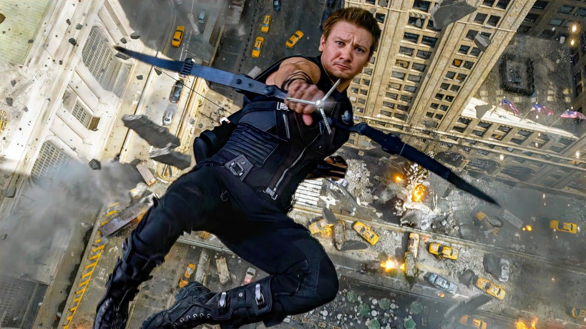
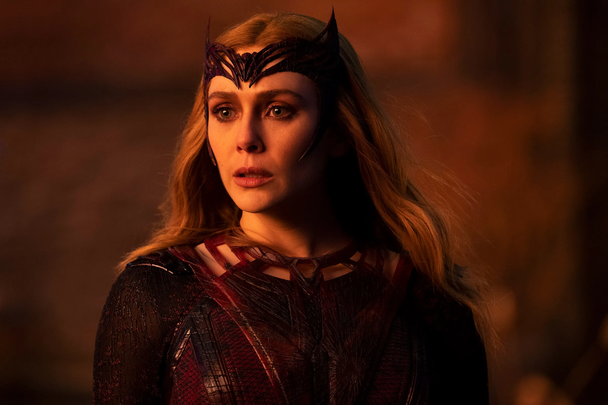

The purpose of this website is to inform people about the different shows and movies in the Marvel Cinematic Universe as well as the characters and what shows/movies they are in.
Iron Man's not so secret identity, Tony Stark. Tony Stark is a billionaire who
uses a high tech suit he built to fight with the Avengers. Tony Stark also built
a suit for his friend James "Rhodey" Rhodes, also known as War Machine.
Captain America (1)
❕
This version of Captian America is known as Steve Rodgers. Steve Rodgers had a super serum inserted into him and became a super soldier hero for the United States of America. Steve Rodgers passed his title as well as his vibranium shield to Sam Wilson, formally known as the Falcon, before Steve went back in time to pursue a relationship with Peggy Carter.
Black Widow
❕
also known as Natasha Romanoff. Natasha ROmanoff used to be a part of the REd Room as a Black Widow assassin for the Russians. After leaving the Red Room, Natasha joined the Avengers.
Hulk
❕
also known as Bruce Banner. Bruce Banner is a scientist who became the Hulk after getting exposed to large ammounts of gamma radiation. The Hulk used to get summoned whenever Bruce Banner got angry, but Bruce is currently stuck as a Bruce/Hulk hybrid.
Hawkeye (1)
❕

also known as Clint Barton. Clint Barton currently lives a normal life with his wife and three kids. Before he retired, Clint worked with the Avengers and Kate Bishop, the newer Hawkeye, shooting arrows.
Thor
✨❕🌌
Thor is the son of Odin, brother of Loki and Hela, and the god of thunder. Thor has used weapons such as Mjolnir (a hammer), Stormbreaker (which was originally made to defeat Thor) and Zeus' lightning bolt. After the events of Thor: Love and Thunder, Thor has adopted Gorr's daughter as his own.
Captain Marvel
✨
also known as Carol Danvers. Carol Danvers was an Air Force pilot who gained her powers from the absorbed energy of the Tesseract from a broken light-speed engine. After the events of the Captain Marvel movie, Carol spends most of her time in space away from earth and helping out other planets.
Nick Fury
n/a
Nick Fury is the founder of the Avengers and the head director of S.H.I.E.L.D. (Strategic Homeland Intervention, Enforcement and Logistics Division).
Groot
🌌
Groot was a part of the Guardians of the Galaxy before he died at the end of the the first film that he was introduced in. After Groot died, a baby Groot was formed with old Groot's same life form.
Baby Groot
🌌
Baby Groot is made of the same life form as the original Groot and is a part of/travels with the Guardians of the Galaxy.
Rocket
🌌
Rocket is a talking raccoon who is a part of the Guardians of the Galaxy and is/was best friends with Groot.
Starlord
n/a
also known as Peter Quill. Peter is originally from earth but was taken by Yondu some time after his mother died of cancer. Peter Quill is the leader of the Guardians of the Galaxy and is the son of Ego, who is a Celestial.
Gamora
🌌
Gamora was the adopted daughter of Thanos, alongside Nebula. Gamora was a part of the Guardians of the Galaxy and was also Peter Quill's love interest. Gamora was a skilled fighter and died in Avengers: Endgame after Thanos pushed her off a cliff in order to recieve the soul stone.
Nebula
🌌
Nebula was Thanos' other adopted daughter and is also a skilled fighter like her sister. Nebula is part cyborg thanks to Thanos replacing some of her parts. Although she was once devoted to Thanos and his mission, Nebula is now a member of the Guardians of the Galaxy.
Drax
🌌
Drax is a member of the Guardians of the Galaxy and became known as the Destroyer while seeking revenge for the death of his wife and child.
Mantis
🌌
Mantis is a member of the Guardians of the Galaxy and Peter's half sister through Ego.
Spider-Man (Peter 1)
❗
also known as Peter Parker. Peter Parker had a close relationship with Tony Stark, Tony being a sort of mentor/father figure for Peter before he died. Peter Parker has the classic spidey senses and after the events of Spider-Man: No Way Home, has no on in his life because everyone forgot who Peter Parker is.
Scarlet Witch
✨❗

also known as Wanda Maximoff. Wanda had powers before the Hydra experiments, but her powers grew after being exposed to one of the infinity stones (as seen in WandaVision).
Pietro Maximoff
❗
Pietro Maximoff is Wanda's twin brother who died protecting Clint Barton in Avengers: Age of Ultron.
Captain America (1)
❕
This version of Captian America is known as Steve Rodgers. Steve Rodgers had a super serum inserted into him and became a super soldier hero for the United States of America. Steve Rodgers passed his title as well as his vibranium shield to Sam Wilson, formally known as the Falcon, before Steve went back in time to pursue a relationship with Peggy Carter.
Black Widow
❕
also known as Natasha Romanoff. Natasha ROmanoff used to be a part of the REd Room as a Black Widow assassin for the Russians. After leaving the Red Room, Natasha joined the Avengers.
Hulk
❕
also known as Bruce Banner. Bruce Banner is a scientist who became the Hulk after getting exposed to large ammounts of gamma radiation. The Hulk used to get summoned whenever Bruce Banner got angry, but Bruce is currently stuck as a Bruce/Hulk hybrid.
Hawkeye (1)
❕
also known as Clint Barton. Clint Barton currently lives a normal life with his wife and three kids. Before he retired, Clint worked with the Avengers and Kate Bishop, the newer Hawkeye, shooting arrows.
Thor
✨❕
Thor is the son of Odin, brother of Loki and Hela, and the god of thunder. Thor has used weapons such as Mjolnir (a hammer), Stormbreaker (which was originally made to defeat Thor) and Zeus' lightning bolt. After the events of Thor: Love and Thunder, Thor has adopted Gorr's daughter as his own.
Captain Marvel
✨
also known as Carol Danvers. Carol Danvers was an Air Force pilot who gained her powers from the absorbed energy of the Tesseract from a broken light-speed engine. After the events of the Captain Marvel movie, Carol spends most of her time in space away from earth and helping out other planets.
Nick Fury
n/a
Nick Fury is the founder of the Avengers and the head director of S.H.I.E.L.D. (Strategic Homeland Intervention, Enforcement and Logistics Division).
Groot
n/a
Groot was a part of the Guardians of the Galaxy before he died at the end of the the first film that he was introduced in. After Groot died, a baby Groot was formed with old Groot's same life form.
Baby Groot
n/a
Baby Groot is made of the same life form as the original Groot and is a part of/travels with the Guardians of the Galaxy.
Rocket
n/a
Rocket is a talking raccoon who is a part of the Guardians of the Galaxy and is/was best friends with Groot.
Starlord
n/a
also known as Peter Quill. Peter is originally from earth but was taken by Yondu some time after his mother died of cancer. Peter Quill is the leader of the Guardians of the Galaxy and is the son of Ego, who is a Celestial.
Gamora
n/a
Gamora was the adopted daughter of Thanos, alongside Nebula. Gamora was a part of the Guardians of the Galaxy and was also Peter Quill's love interest. Gamora was a skilled fighter and died in Avengers: Endgame after Thanos pushed her off a cliff in order to recieve the soul stone.
Nebula
n/a
Nebula was Thanos' other adopted daughter and is also a skilled fighter like her sister. Nebula is part cyborg thanks to Thanos replacing some of her parts. Although she was once devoted to Thanos and his mission, Nebula is now a member of the Guardians of the Galaxy.
Drax
add info
add information the next time you look at this
Mantis
add info
guardian of the galaxy and peter's half sister
Spider-Man (Peter 1)
n/a
also known as Peter Parker. Peter Parker had a close relationship with Tony Stark, Tony being a sort of mentor/father figure for Peter before he died. Peter Parker has the classic spidey senses and after the events of Spider-Man: No Way Home, has no on in his life because everyone forgot who Peter Parker is.
Spider-Man: No Way Home
✨
features Spider-Men (Tom Holland, Andrew Garfield, Tobey Maguire), Doctor Strange, Green Goblin, Sandman and Doc Ock from Tobey Maguire's Spider-Man, Curtis Connors and Electro from Andrew Garfield's Spider-Man
After the events of Spider-Man: Far from Home where his identity gets revealed, almost all of New York City turns against Spider-Man/Peter Parker. Peter Parker turns to Doctor Strange to help the world forget Peter after Peter, MJ and Ned all get rejected from MIT. Doctor Strange messes up the spell, which breaks open the multiverse and brings in villians like Doc Ock, the Green Goblin, Electro, the Lizard and Sandman into their universe.
Thor: Love and Thunder
Δ✨❕
features Thor Odinson, the Mighty Thor aka Jane Foster, Korg, Kind Valkyrie, Gorr and Zeus
In this movie, Jane Foster gets diagnosed with cancer and goes to wield Mjornir in an attempt to stop the cancer from spreading and while she wields Mjolnir, Jane turns into the Mighty Thor. Thor teams up up with Valkyrie, Korg and the Mighty Thor to warn other gods about Gorr the god killer. After no one takes Gorr as a serious threat and the children of Asgard get kidnapped, Thor, Jane, Korga and Valkyrie go to stop/defeat Gorr.
Doctor Strange and the Multiverse of Madness
Δ✨
features Soctor Strange, Wong, America Chavez, the Scarlet Witch and characters from other universes such as Professor X
America Chavez, a character who can create portals into different universes is being hunted, so she goes to Doctor Strange for help. Doctor Strange helps protect America Chavez from the Scarlet Witch, who wants to use America's powers to see her kids Billy and Tommy (Scarlet Witch's children from the show, Wandavision) who actually exist in other universes as her children.
Eternals
Δ✨
features the Eternals (Sersi, Ajax, Druig, Makkari, Thena, Gilgamesh, Kingo, Phastos, Sprite, and Ikaris)
The Eternals, whose main mission is to wipe Deviants off the earth, reunite after a stronger form of Deviants emerge after the Eternals thought that they got rid of all the Deviants. The Celestial who sent the Eternals to earth actually sent them there to help the human population grow so that a new Celestial can emerge from the earth's core. After the Eternals find out about their real purpose, they are divided between helping mankind or letting the Celestial be born. In the the end, the Celestial is killed as it was beginning to emerge and the Eternals that killed it are taken by the Celestial in charge of them to be evaluated for saving humans.
Shang-Chi and the Legend of the Ten Rings
Δ✨
features Shang-Chi and Wong (at the end of the movie)
Shang-Chi and his younger sister Xu Xialing go back to their childhood home after their dad takes their jade necklaces, given to them by their mothers, and they learn that their dad is trying to help her escape from Ta Lo, the magical secret village that she's from. Because their mom is dead, Shang-Chi and Xu Xialing know that their mom isn't being help captive and venture off to go to Ta Lo to warn people that their dad, the leader/owner of the Ten Rings is coming to attack them. It turns out that a soul sucking monster was tricking Shang-Chi's dad into think that his wife was still alive and so in an attempt to free his wife, Xu Wenwu (Shang-Chi's dad) ends up setting the soul sucking monsters free and is killed. Shang-Chi becomes the new owner of the Ten Rings and at the end of the movie, Wong appears to Shang-Chi for help.
Black Widow
❕
features Natasha Romanoff, Yelena Belova, Red Guardian, and Taskmaster
This movie is a prequel about Natasha Romanoff while she was still a Black Widow assassin for the the Red Room. While trying to help the other Red Room assassins from being mind controlled, Natasha gets reunited with her old cover family from when she was a young girl.
Captain Marvel
Δ✨
features features Captain Marvel, Kree, skrulls and Nick Fury
This movie focuses on the origin of Captain Marvel aka Carol Danvers. After becoming Captain Marvel, Carol Danvers gets involved in a space war between the Kree and skrulls.
She-Hulk: Attorney at Law
Δ✨❕
The show focuses on Jennifer Walters, a lawyer who becomes She-Hulk after getting some of Hulk's blood into her blood stream. In this show, Jennifer tries find a balance between her human self and Hulk self, her job and villans who want to fight her/steal her blood.
Ms Marvel
Δ
Kamala Khan, a teenager and Avenger superfan from New Jersey, discovers that she has powers thanks to a piece of jewelry passed down from her grandmother. Kamals tries to harness her new powers while two different groups try to come after her.
Moonknight
Δ✨
Steven Grant learns that he has D.I.D and that one of his identities (and the host of their body) named Mark Spector is a servant of Khonshu, an egyptian god of the moon. Steven, Marc and Layla try to stop Harrow from killing people and freeing Ammit, the egyptian crocodile goddess.
Hawkeye
Δ❕
features Hawkeye (1)- CLint Barton, Hawkeye (2)- Kate Bishop, Black Widow Yelena Belova, Wilson Fisk and Maya Lopez aka Echo
Kate Bishop uses the Ronin suit after stealing it from an illegal auction, which leads to Clint Barton finding her and them teaming up.
Loki
❕
features Loki, a female variant of Loki called Sylvie and the Time Variance Authority
After Loki escapes with the Tessaract after the events of Avengers: Endgame, he is arrested by the Time Variance Authority. After being arrested, Loki teams up with Mobius to to find a major threat to the TVA which turns out to be Sylie, a version of Loki from another universe.
Falcon and the Winter Soldier
Δ
features Sam Wilson, Bucky Barnes, Joaquin Torres, the U.S Agent, Zemo and the Flag Smashers
Sam Wilson (Falcon) and the former Winter Soldier (Bucky Barnes) team up to go against the Flag Smashers, a group of people who want their lives to go back to the way it was when people were still blipped.
WandaVision
Δ✨
features Wanda Maximoff, Vision(s?), Darcy, Jimmy Woo, Monica Rambeau and Agatha Harkness
What starts off as a quirky yet eeire show focuses on Wanda Maximoff and what appears to be Vision in a town called Westview.
Daredevil
Δ
features Daredevil, Elektra, Stick, Wilson Fisk and the Hand
Daredevil focuses on Matt Murdock and how he struggles with his double life between being a vigilante and being a lawyer.
The Punisher
n/a
features Frank Castle aka the Punisher
♦to be filled in once I watch the show♦
Jessica Jones
n/a
features Jessica Jones
♦to be filled in once I watch the show♦
Luke Cage
n/a
features Luke Cage
♦to be filled in once I watch the show♦
Iron Fist
n/a
features Danny Rand aka Iron Fist
♦to be filled in once I watch the show♦
The Defenders
n/a
features Jessica Jones, Daredevil, Luke Cage, Iron Fist, Elektra and the Hand
A team up between Jessica Jones, Daredevil, Luke Cage and Iron Fist in order to stop an organization called the Hand.


.jpg)